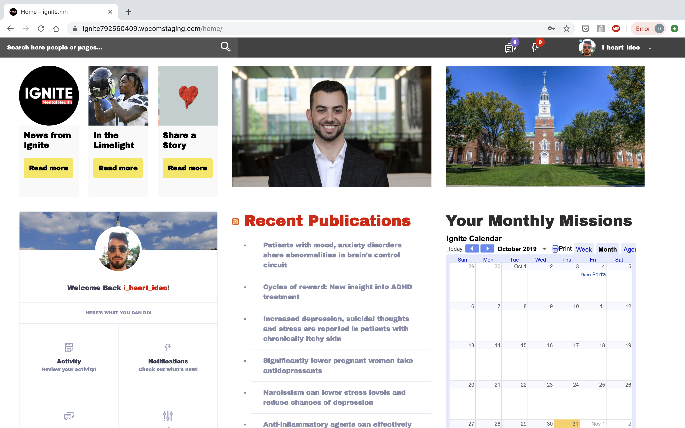
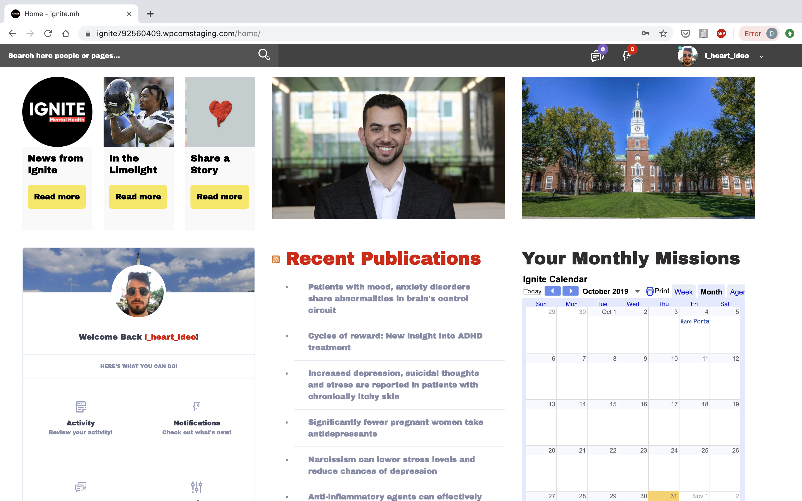

About
Ignite Mental Health networks students at undergraduate universities who are passionate in changing the landscape of mental health. We called them "Changemakers." My role was officially "Innovation Chair" though in reality I had my hand in recruiting, fundraising, and UI. In regards to marketing, I developed and promoted a custom social media website for Ignite Mental Health, a startup based out of Harvard Innovation Labs. I led the team that developed a website on a shoestring budget and a tight timeline, and then I helped recruit 135 college students from across the country to join and register. The website let these students who were passionate about mental health share best practices while also giving us a platform to promote our brand. Screenshots of the closed-access website, which are also in my portfolio, can be seen here.
Goals
Coming on the heels of taking the design thinking class that would throw a wrench into my life plans, and having started a mental health organization on Darmouth’s campus, the Ignite internship appeared on my school’s career development site like a unicorn in the desert. I was thrilled at the opportunity to blend mental health with a design thinking ethos. Plus, it didn’t hurt that I would be surrounded by one of the most beautiful and prolific college towns of all time.
- prototype working for a mental health organiztation
- explore working for a startup
- see how I liked living in Boston
Project: Online Community Website for Ambassadors
Portal Inspiration
Options Analysis
Portal Specs
Splash Page Wireframes


Finished Product
 

Coworkers
LinkedIn Recommendation (boss)
Reflection
There were moments of inspiration, like when we watched a commercial that Sean would pull up about suicide, or digging into statistics on my own during a research assignment, or just relearning how to open up the right way about my psychiatric history with coworkers and having them do likewise. Somewhere in there was a vision of the way mental health should be talked about in the workplace. Still, the majority of my time was highly indirectly linked to actually improving someone’s mental health